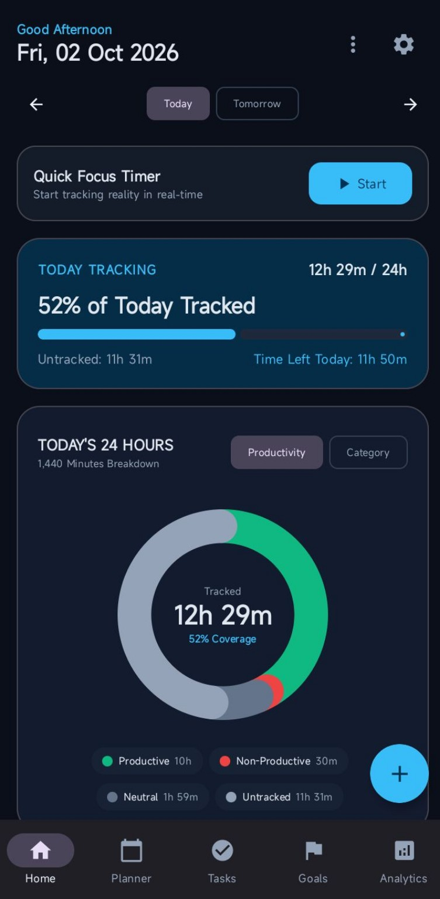
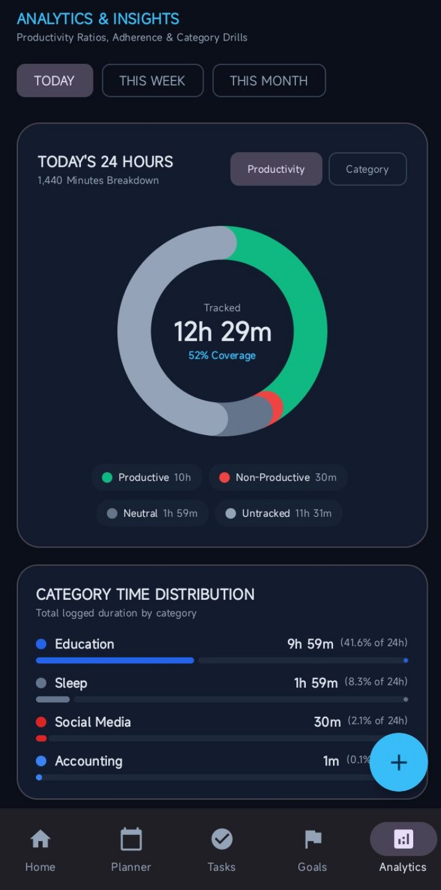
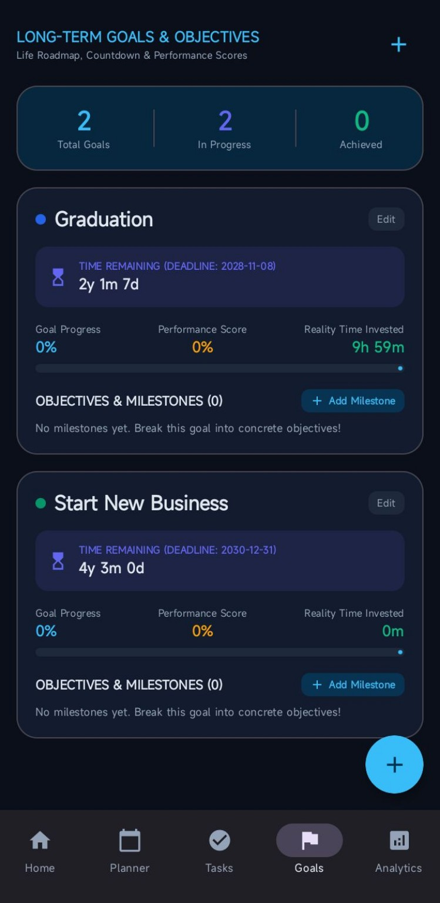

Android 7.0+ · Direct APK download · Contains ads No GitHub account required. Always downloads the latest production APK.



Install on Android
Download My24.apk, then open the file. Android may ask you to allow “Install unknown apps” for your browser or file manager because this download is outside Google Play. Review the prompt and keep your device security protections enabled.
My 24 includes banner and rewarded ads. Analytics access uses a rewarded ad. Read the privacy and advertising disclosure before installing.
My 24 user manual
Start with one study session, review how you spend your day, and keep your longer-term goals in view. This guide covers the controls shown in the supplied app screenshots. Labels may vary between releases.
Open My24.apk from your browser downloads or file manager.
If Android requests permission to install unknown apps, review the prompt and allow installation for that browser or file manager if you trust this download. Keep device security protections enabled; you can turn off this installation permission afterward.
Complete installation and open My 24.
The bottom navigation shows Home, Planner, Tasks, Goals, and Analytics. Use it to move between screens. Detailed Planner and Tasks workflows are not covered here because their screens have not been provided.
2. Read your day on Home
Today, Tomorrow, and the date arrows appear at the top. Check the displayed date before reviewing your day.
Quick Focus Timer: tap Start to begin tracking a focus session. Follow the controls displayed during the session to finish it.
Today Tracking: see the tracked time, percentage of the day tracked, untracked time, and time left today.
Today's 24 Hours: view the 1,440-minute breakdown. Use Productivity or Category to choose a view.
The productivity breakdown distinguishes productive, non-productive, neutral, and untracked time. Coverage tells you how much of the day has been recorded; it is not a productivity score.
Student tip: start a focus session when you begin studying, then review your recorded time later to understand where your day went.
3. Review Analytics & Insights
Open Analytics from the bottom navigation. Analytics access can be unlocked through a rewarded ad; follow the in-app prompt when it appears.
Select Today, This Week, or This Month to choose a review period.
Use the productivity and category views to explore recorded time.
Read Category Time Distribution to compare the durations shown for categories such as education or sleep. Categories and values shown in screenshots are examples, not your own results.
My 24 includes Google AdMob banner and rewarded ads. Rewarded access involves watching an ad. This guide does not promise ad availability or a particular unlock duration.
4. Follow goals & milestones
Open Goals to view long-term goals and objectives.
The summary displays total goals, goals in progress, and achieved goals.
Use the + control to begin adding a goal and follow the form shown in the app.
Use Edit on a goal card to open its editing controls.
Each card displays its deadline countdown, goal progress, performance score, and recorded time invested.
Use Add Milestone to begin adding an objective or milestone to that goal.
Student tip: use a goal for a longer-term objective such as graduation, and milestones for smaller steps. The guide does not define how performance scores are calculated.
5. Update the app & get help
Download the latest My24.apk from this page and open it. If Android offers an update, review and complete it. Avoid uninstalling the existing app just to update: uninstalling may remove app data. Backup and restore behavior has not been verified.
Download does not start? Try the link in your device's browser and check its Downloads list. You do not need a GitHub account.
Installation is blocked? Check Android's installation prompt, available storage, and Android version. Do not bypass security warnings.
Update reports a conflict? Keep your existing installation and report the exact message instead of uninstalling immediately.
Need help? Visit the GitHub repository and include your Android version, release version, and steps that led to the problem. Never post passwords, signing credentials, or private personal information.
See release history for version details and the privacy and advertising disclosure for the published information. This manual is a usage guide, not a complete privacy policy or a guarantee of outcomes.